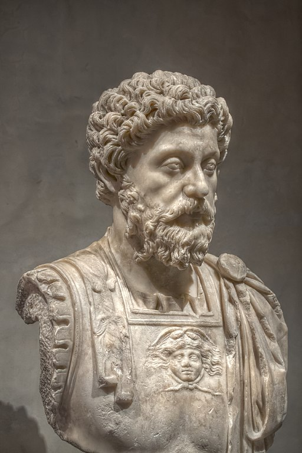

Marcus Aurelius
The story of the last great emperor, leader and stoic of Rome

A marble bust of Marcus Aurelius at the Musée Saint-Raymond, Toulouse, France
Here's a time line of Marcus's life:
- Marcus Annius Aurelius was born into an established Roman family, but not the royal lineage. From these beginnings, it would seem a remote possibility that he would one day become emperor of the Roman Empire, let alone one of the most famous Roman emperors.
- When the Roman emperor Hadrian was nearing his death, he was forced to pick a successor. Lacking children of his own, he picked Lucius Ceionius, who unexpectedly died before Hadrian. Hadrian’s second choice was a senator, Antoninus Pius. Pius was also childless and adopted both Lucius Verus and Marcus Aurelius, whose name changed to Marcus Aurelius Antoninus.
- When Hadrian died, Antoninus assumed command. The education of Marcus and Lucius took on a new urgency, as they were next in line. Marcus studied under renowned Athenian rhetorician Herodes Atticus as well as Marcus Fronto. When Antoninus died in 161, Marcus and Lucius assumed the roles of co-emperors. Lucius would die in 169, leaving Marcus the sole emperor from 169–180.
- Marcus’s rule was not an easy period for the Roman Republic. The last years of Pius saw the empire attacked on all sides. The Parthian war lasted from 161–166. While the Romans won the war, they brought back a plague which would eventually kill 5 million people. The Gauls were attacking the northern Roman border, both in Gaul and across the Danube. If this wasn’t enough to deal with, Christianity was rising and assuming increasing political power.
- The last of the Five Good Emperors, Marcus Aurelius is a reminder that despite the saying that “absolute power corrupts absolutely,” that is not always the case. At the time of his death, he was one of the most powerful people on earth. He could have had anything he wanted, and few, if any, would dare challenge him on anything. And yet he proved himself deserving of the power he held. Under Marcus Aurelius, the empire was guided by virtue and wisdom.
- Today we are left with his journal, his Meditations. The work is a landmark of Stoic philosophy that has guided both powerful and common men and women for thousands of years. While Meditations was never intended for publication, it remains in print to this day and is perhaps as popular as ever. The journal shows that the most powerful man on the planet was going through the same problems that we deal with today — the same problems we will be grappling with tomorrow.
- Through reading Meditations, we are left wanting to become a better person. The author’s humility, discipline, work ethic, kindness, rationality, and character shine through. He shows his vulnerability to us as he counsels himself through his darkness. Mostly, Marcus reminds himself over and over to detach his emotions from the difficulties of the world, to maintain his composure during tough times, and to treat all fates as equal — prosperity and poverty, success and failure, life and death.
- We know this philosophy as Stoicism, practiced by not just by Marcus but also by Seneca, Epictetus, Diogenes, and so many others.
- When Marcus Aurelius died and his successor took his place, the Roman world began a decline that it would never recover from. His extraordinary wisdom is among the most valuable we can study.
I have often wondered how it is that every man loves himself more than all the rest of men, but yet sets less value on his own opinions of himself than on the opinions of others.
-- Marcus Aurelius
If you have time, you should read more about this incredible human being on his Wikipedia entry.
Disclaimer: All content on this page is acquired from Google and Wikipedia. No intention of copyright infringement.